Denne siden er en analyse av nettstedet.
Det beste steget å begynne med (etter at vi har laget nettstedet), er å gjennomføre en analyse av eget nettsted. I denne artiklen, skal vi gå gjennom seo,uu og heuristisk evaluering-analyse.
Denne analysen kan hjelpe oss å finne ut styrker og svakheten. Deretter søker vi etter årsaker og løsninger og arbeide for å forbedre nettstedet vårt. Slik får vi siden høyt i trafikken.
SEO-analyse:
SEO-analysen er den første prosessen på vei til søkemotoroptimalisering for nettstedet. Det finnes mange verktøy som tilbyr oss en omfattende analyse av nettstedet. Jeg har valgte å bruke noen verktøy i tillegg til en manuell analyse.
*Det første har jeg legget merke til at sidene har en kort title. Forsiden har title som ikke er relevant til siden. Så de skal forbedres for å sørge at title er unik for å øke klikkfrekvensen. Sidene har ikke meta "description" og "keywords". Selv om det er svært viktig å ha overbevisende beskrivelse og relevante nøkkelord på sidene, for å vurdere om innholdet er relevant for brukerens spørsmål.
*Språket er definert riktig på alle sidene bortsett fra forsiden. Den skal være norsk.
*Semantiske html-5 tag blir brukt.
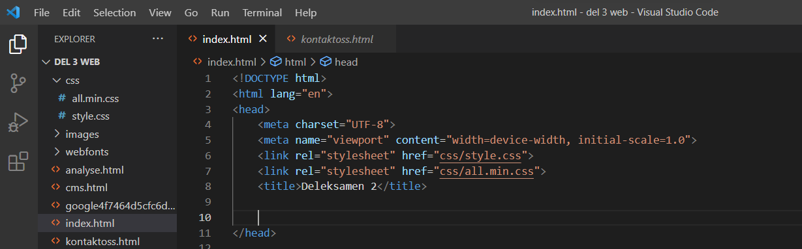*Verktøyethttps://freetools.seobility.net/ viser også at nettstedet har ikke hovedoverskrift (h1). I tillegg kreves det å forbedre underoverskriftsnivåer, for å gjør sidene lettere å lese.
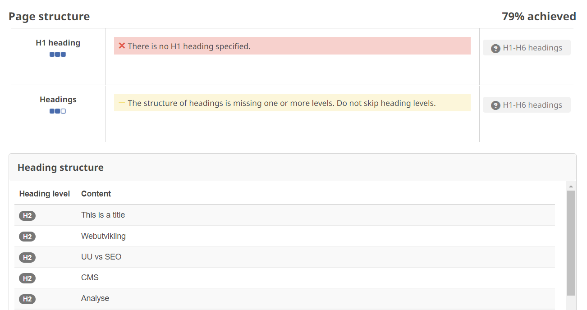*Det finnes alt-attribute på alle bilder, men ikke alle beskrivelser er riktig. eksemple på bildet under. Beskrivelse på bilder skal være riktig og må inneholde en av søkeordene.
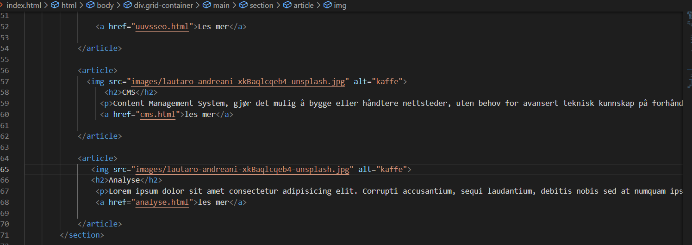*Når jeg har brukt https://web.dev/measure/, har det vært Seo 90. Error skal rettes opp (ingen robots.txt fil ble opprettet, Det ble ikke satt canonical URLs link rel="canonical", små skriftstørrelse, Interaktive elementer skal være større, og ha nok plass rundt seg.). Resultaten er på bildet:
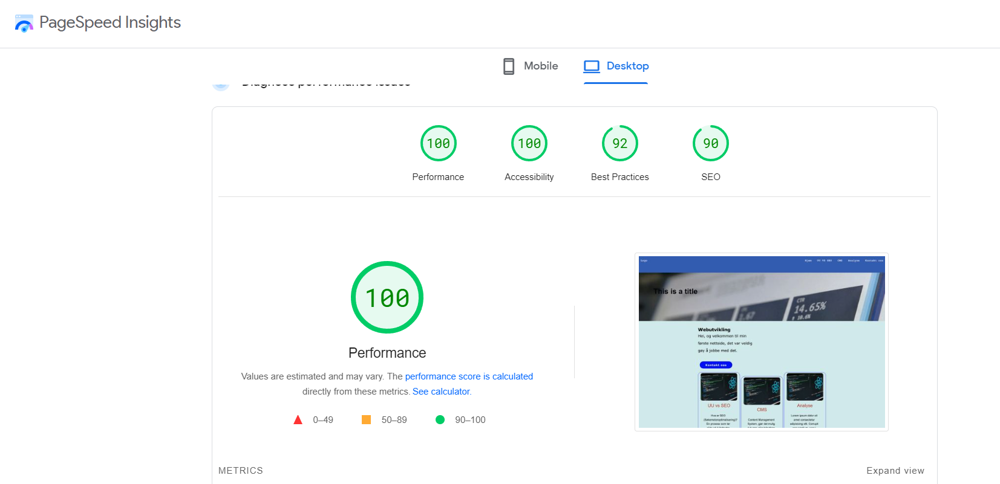 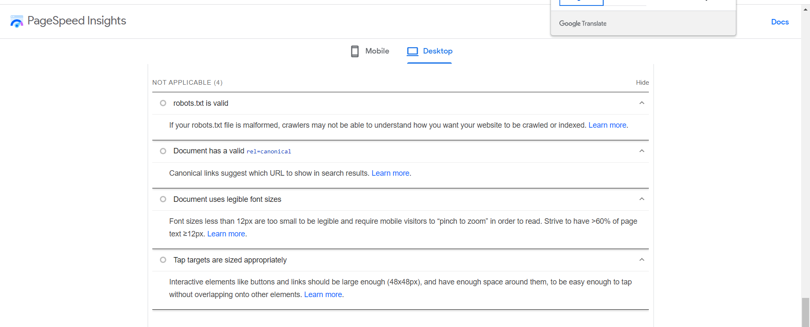*SEO analyse viste også at nettstedet innholder egen title for hver side, gyldig http slik at nettstedet kan indeksers, og at indtre linkene crowlble. De angir sammenheng mellom sidene. Meta-viewport er satt også slik at nettstedet passer på alle enheter.
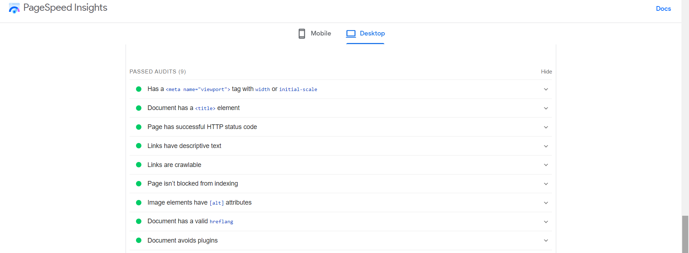*Ved å bruke verktøyet http://ami.responsivedesign.is/, har jeg funnet at mitt side passer bra for data maskiner, men den ikke er responsivt for små skjermer (i Pad , mobiler..). Jeg må arbeide med Media Queries for å øke responsen til nettstedet mitt på alle skjermer. Dette hjelper til å forbedre nettstedets SEO.
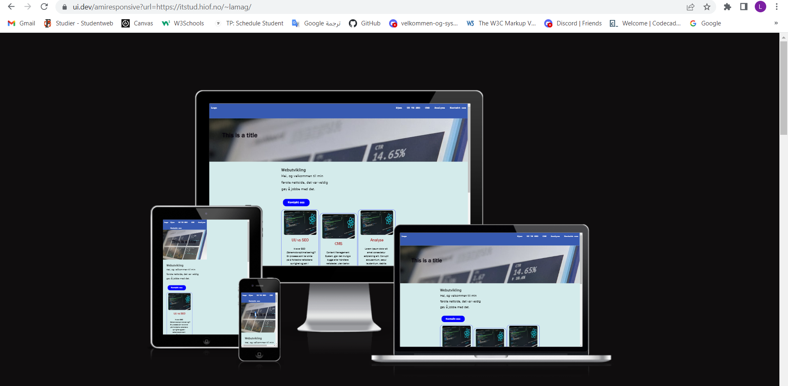*ved verktøyet https://pagespeed.web.dev/, er hastigheten bra 0.6 s for desktop og 1.6 for mobile.
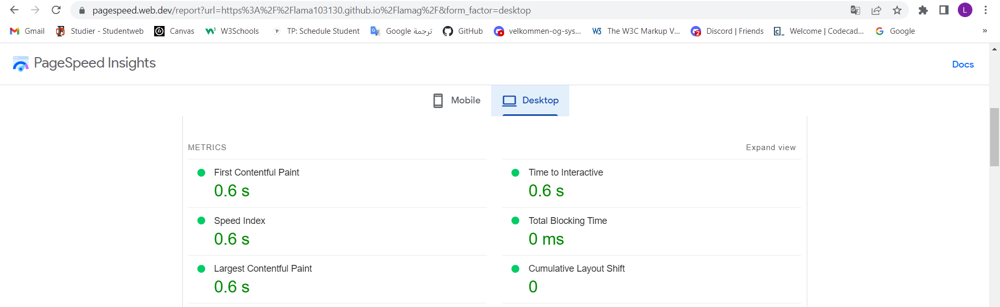 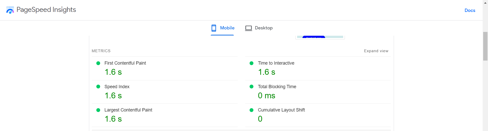For URL-en, jeg har ikke kontrol på den. Siden jeg har sendte Eksamen del 3, jeg har sjekket html-en ved å bruke https://validator.w3.org/ og jeg har ikke fått noen røde error.
Universell utforming UU-analyse:
Universell utforming gir en gode og brukarvenlig opplevelse for alle. Derfor er det viktig å teste ut hvordan nettsidet fungerer, og finne problemer som brukerne kan støte på.
Jeg har sjekket alle sidene manuelt og ved bruk av noen verktøy og programmer for å teste UU og jeg har funnet at:
*Tekstalternativer for alle bildene, er angitt, men alt-tekstene på forside formidler ikke den samme informasjonen som et bilde. Bildene må inneholde alt-tekst som beskriver hva bildet handler om. Dessuten krever bildene på innholdssidene langere beskrivelser.
*Språkkoden er ikke angitt riktig på alle sidene. Derfor måtte den defineres for at søkemotorer benytter den for å avgjøre relevante treff. Opplesende hjelpemidler bruker språkkoden også for å velge riktig stemme for opplesing.
*Tittelen på forside beskriver ikke sidens emne eller formål, og det dekker ikke WCAG-krav 2.4.2 . Derfor tittelen skal være nyttige og tydelige. Den er også nyttig for søkemotoroptimalisering fordi Sidetittel presenteres øverst i vinduet eller i fanen i nettleseren, og er også det første som leses av opplesende hjelpemiddel.
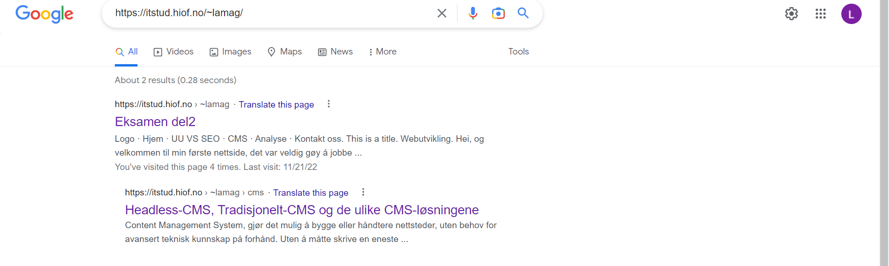*Rekkefølgen på Overskriftsnivåene skal være korrekte. Alle sidene har ikke hovedoverskrift.
*Fargekontrasten mellom teksten og bakgrunnen i menyen og fotteren er 5.7:1. Kontrastverdien oppfyler A- og AA-nivå for store og vanlige skrifter, og AAA-nivå for vanlige skrifter. Denne kontrastverdien vil gjøre teksten lettere å lese for alle brukere.
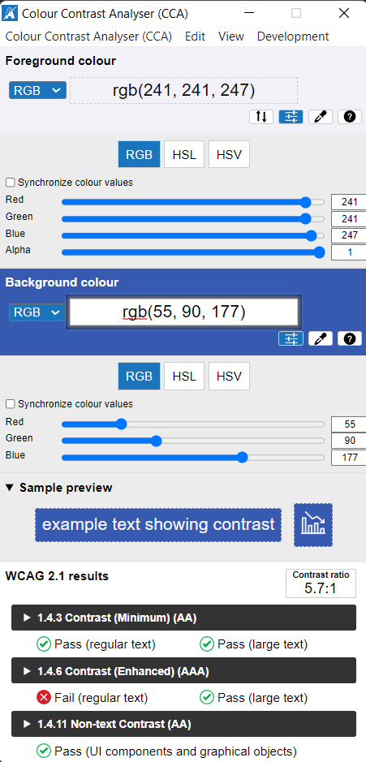Mens Kontrastverdien for knapper og menyens tekst som vises når musepekeren holdes over ved navigering, oppfyller alle kraver.
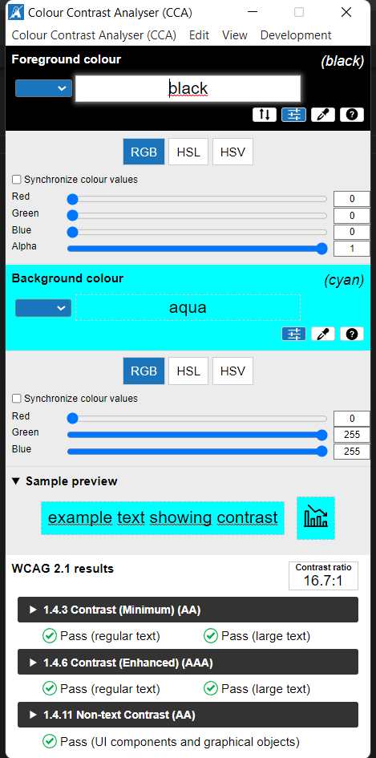 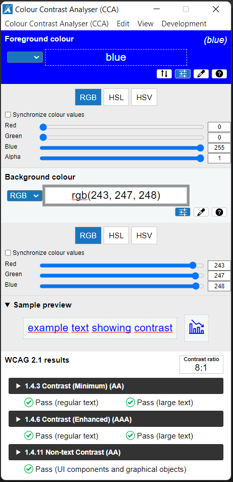*Navigasjonslinker som gjentas på flere sider har en konsekvent rekkefølge.
*Attributten roles, blir ikke brukt. Da skal elementen ha rolle, et navn og noen ganger en verdi for å sikre at folk som bruker hjelpeteknologier kan bruke dem. Eksempler på hjelpeteknologier er skjermlesere, bryterkontroller og programvare for talegjenkjenning.
*HTML og css er validert for alle steder. Det finnes ikke error. html struktor er riktig. Hver verdi definert på nettstedet er unik.
*Alle sidene skal være responsive ved å optimalisere media queries.
Heuristisk evaluering:
Når det gjelder brukeropplevelse. Jeg vil at brukerne skal ha en sømløs opplevelse mens de besøker nettstedet mitt. Mange faktorer bidrar til god brukeropplevelse. Innholdet er enkelt å forstå. Alle linkene fungerer. Nettstedets lastehastighet er god, men jeg vil arbeide med responsivt design. Hvis en bruker bruker mobile eller ipad til å surfe, vil det være hyggelig hvis skriftstypen, størrelsen, knapper og fargen er lesbar. Hvis nettstedet tilpasser det, vil det gi gode resultater for nettstedets ytelse.